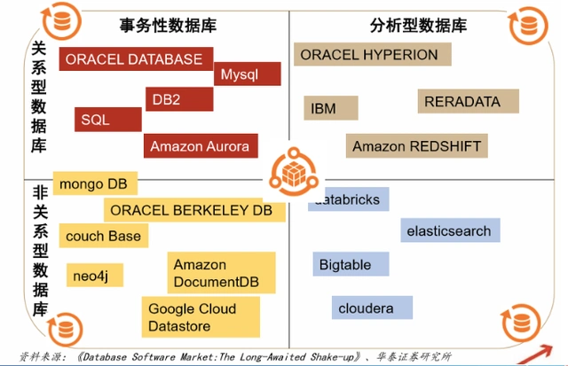
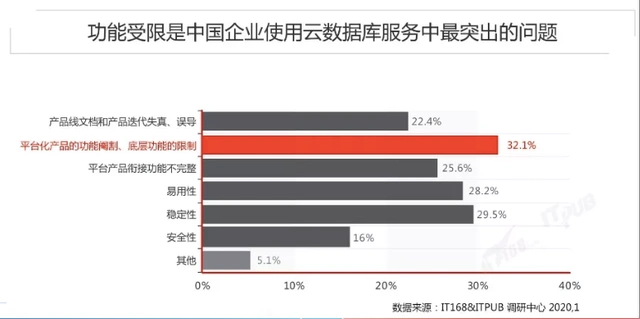
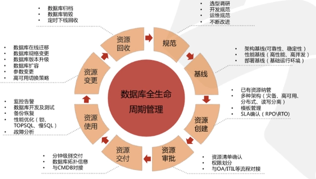

董宇：数据库行业背景及发展趋势分析
中国数据库市场将迎来高增长态势，原因有四点：首先是政策利好，国家大力支持国产数据库厂商的发展；其次是需求拉动，国产化和数字化转型带动需求的爆发式增长；同时，供给端传统、初创和跨界各类型厂商厚积薄发，产品和技术经历了多年工程实践的打磨走向成熟；此外，国内企业对基础软件的付费意愿和IT支出占比在逐年提升，有利于市场的长期发展。
可以预见的是：未来，中国数据库多场景现状与融合需求长期并存，云数据库(包括公有、非公有各种形式)成为主流；开源成为产业互联网时代数据库厂商的破局之刃；人工智能延伸DBA的能力半径，优化数据库性能，是数据库下一步发展的目标。
数据库市场现状如何？未来有什么发展趋势？在哪些细分方向值得投资？最近，钛资本投研社邀请南虹资本VP董宇进行分享，他主要负责南虹资本数字化、新材料、新能源方向，拥有复旦大学本科、硕士学位。南虹资本由市场团队和国有公司共同发起成立，是集科创投资、资产管理于一体的综合平台，聚焦于先进技术与产业升级的科技创新投资领域。本次分享主持人是钛资本董事总经理王勇，以下为分享实录：
行业背景
数据库是按照一定数据模型和组织形成的，具有冗余度小、独立性高和拓展性强的特点。数据库全称为数据库管理系统（DBMS），正如其名，它是负责维护数据库底层的管理系统，而负责维护管理系统的人则被称为DBA。数据库管理系统由线程和内存池组成，如果客户要看数据库中的数据，它会通过实例（Instance）来实现，而不是直接读取硬盘上的文件。数据库系统之上还有一层应用系统，就是我们平常看到的交互界面，平常用户在这个界面上进行操作，给数据库发动一个指令，数据库系统就会把实例发放给数据库进行读取工作，再经过一系列后台分析，将数据提取到用户面前。
根据统计，数据库全球市场规模大概在八百亿美元左右。比较突出的是，数据库在全球范围内市场集中度非常高，近五年内全球top5企业常年占市场份额的80%以上，而位列top3的微软、甲骨文和亚马逊常年占比更是达到70%左右。
整个数据库行业的产业链上游主要是硬件厂商，比如国内的中兴和华为。中游分为DB（数据库底层开发商）、数据库DBMS（管理系统开发商），以及为他们配套实施服务的服务商。下游分为应用开发商和行业用户。整个数据库行业有多种参与方式，比如华为同时参与了上游的硬件，又开发推出了中游的华为云数据库DBMS系统。
发展趋势
数据库诞生于20世纪60年代，经历近十年蝶变，到了70年代，IBM提出了商用的关系型数据库，此后，这种商用数据库经过包括Honeywell、IBM、微软等主流厂商的迭代更新，逐渐推广于市场。随着数据化趋势的发展和大数据时代的到来，数据库逐渐从灯光边缘来到舞台中心，成为了大数据时代最为重要的基础设施之一。自商业化后，长期以来，商用关系型数据库始终处于本地化部署阶段，直到2010年以后，数据库逐渐发展出了以下三大新趋势：第一，数据库的多元化。随着人们的需求逐渐多元化，一些非关系型的数据库得到了蓬勃发展，可以适应更多应用场景。第二，数据库上“云”。随着云技术、通讯和网络技术的大发展，数据库逐渐从本地部署向云上转化。第三，数据库的开源。最早的数据库是以闭源为主，后来逐渐有更多开源的数据库入场。

第一个发展趋势是数据库的多元化。当下，关系型数据库仍然是市场主流。什么是关系型数据库？最常见的就是我们常用的excel，非常直观地用二维的行列来排布数据。非关系型数据库即储存形式不是二维结构的数据库，从实时性来看，数据库还分为两类：一个是事务性的数据库，特点是要求有互动行为，对于响应的时间要求比较高；另一种是非事务性数据库，单纯把这些数据储存在里面，后续再进行分析。
关系数据库中的数据，彼此之间的关系一目了然，理解起来轻而易举。由于它的储存性能比较好，所以有易于维护、便于理解、使用方便等优点。但它有几点问题：一点数据库的灵活性较差，数据只能以规定的形式来填取，一旦一个数据库成型之后，想更改它的形式非常困难；二是它的数据储存方式非常讲究数据关系，对海量数据的处理非常不友好。
随着数据行业的大发展，数据要求的应用场景越来越多，出现了不以二维结构而是其他一些关系来储存数据的数据库，这些统称为非关系型数据库。它们的特点是格式灵活。由于不通过关系处理数据，所以它的响应速度和性能比较优秀。
但是非关系型数据库也有一些问题：第一，它的逻辑比较难，比如图数据库就是以图形或者网络作为储存的结构，以网络结构勾结起数据之间的关系，在理解和学习上需要投入较高成本；第二，不适合进行复杂操作，由于不是通过强关系性来储存，在调取复杂查询的时候，需要从一个表跳到另外一个表，再跳到后一个，以此类推，效率比关系型数据库要低。
常见的非关系型数据库包括键值数据库、文档型数据库、时序数据库和图数据库。
以Redis键值数据库为例，经典应用场景是微博上的发帖功能，因为微博是个超大规模应用，经常会出现高并发的状态，所以适用键值数据库。其他的数据库也都有自己特定的应用场景。
关系型数据库有一个比较权威的评价社区叫做“DB-Engines”。作为一种比较成熟的数据库形式，关系型数据库还衍生出了诸如分布式数据库、云关系数据库等分支形式。但该类数据库近年发展面临挑战，在2022年8月受关注程度最高的前20个数据库产品中，非关系型数据库占了9个，相关技术更是发展迅速，正逐渐取得市场认可。
第二个发展趋势是云数据库。通常来说，传统的本地数据库是把数据库以及DBMS这些软件都部署在本地的服务器上。云数据库就是把数据库和大部分的DBMS管理软件、总环管理系统放在了云端。它主要有两种模式：一个就是通过虚拟机映象在云上独立运行，数据库实际上是一种比较常见的私有云形式；另外一种就是将数据库的硬件系统和DBMS的大部分功能都交由云数据库厂商来提供，而用户只需获得访问权限，通过网络去访问数据库的服务。随着云计算技术以及通讯技术的发展，云数据库已经步入了商业化进程。根据统计，本地数据库每年的增长只有4%左右，而云数据库每年的平均增长大概为16%。
据统计，截至2021年，全球本地化部署的和云数据库系统的DBMS的收入情况方面，Oracle常年处于霸主地位，2019年之前一直保持第一。但继2020年微软凭借微软云的增长夺走魁首之位后，2021年，亚马逊也凭借亚马逊云AWS超过Oracle跃居第二。国内有三个厂商进入排名榜单，分别是位列第7的阿里云和位列第9的华为云以及第12的腾讯云。传统本地部署数据库的占比排名都有所下滑，新兴云数据库厂商排名上升。这是云数据库的大势所趋。
为什么会有这样的发展趋势？因为本地部署的数据库存在一些不足之处：最突出的一个缺点就是成本高。数据库跟仓库有一定的相通之处，用仓库来打比方，本地化部署的数据库其实相当于厂商租用仓库的用地，这是一笔投入；还要在里面安装各种的货架、服务设施，这是初始投入；同时还需要为这样的一个数据中心配备员工，为一些系统在使用的时候提供电力系统，整体来说初期投入很大、决策很重，而且后续的运营也需要持续投入，成本比较高。第二点是可靠性需要冗余，需要额外的部署储存作为备用。第三点是扩容和迭代比较困难，数据库本身是本地部署的数据库，有硬件系统和软件系统，硬件系统要扩容的话要买更多的服务器。另外一点就是因为老系统用着比较舒服，导致没有那么强的动力去更新发展，导致在扩容和迭代方面比较困难。
相比之下，云数据库就有不少优势。它最大的特点是服务器硬件和维护服务是云数据库厂商提供的，初始成本投入比较小，而且不需要提供太多的维护。由于冗余的备份都是由云数据库厂商来提供服务，因此这一方面的成本又进一步下降。既能满足需求又成本低，就逐渐产生了数据库上云的大趋势。但云数据库也有的一些问题，其中最大的问题就是其成熟程度。本地化的数据库，从商业化到现在经历了近50年的发展，有大量的功能和代码的丰富积累，功能比较完善，而云数据库厂商由于业态、业务形式都比较新颖，因此它的工艺积累不如已经成熟的本地化部署方案。而且在升级和迭代方面，其系统的兼容性也不如本地化部署。

第三个发展趋势是数据库开源。首先，什么是闭源数据库？大家所熟知的一些商业化数据都是闭源的，源代码对于这些厂商来说属于商业机密，不对客户开放。开源数据库正相反，其数据库代码向公众开放。
它有几个特点：第一，由于开源的授权费没有商业化数据库那么高，成本相对来说要低一些。第二，也是最重要的一点，它的源代码完全公之于众，客户在使用的时候能够清晰地看到里面数据的情况，对数据的流向、指令了如指掌，不用担心数据库里面是否存在“走后门”的情况，可以满足自主化和信息安全的需求。第三，由于传统的商业数据库集中度比较高，对于用户来说是比较强势的一方，它本身不提供额外的定制化开发，仅由第三方服务商提供应用层面的二次开发；而开源数据库不仅可以自行开发，还可以在DBMS代码层面直接进行开发。

开源数据库收费方式遵循开源数据库的开源许可证，一般由一家公司来运营，以MySQL为例，它的代码在一个开源平台上面公布，由各个成员单位和成员进行定期维护。它的准则是，如通过开源的代码二次开发的数据库产品也是开源系统，就不用收费，反之则要收取一定的授权费用。
开源数据库已经成为了数据库行业发展的趋势。DB-Engines在2022年统计过，发现开源数据库的许可证数量在2021年反超了商业化闭源数据库的许可证数量，并在2022年8月呈逐渐扩大态势。现在就数量来说，开源的数据库比闭源的数据库更多。
回到国内市场，我国数据库市场也是以关系型数据库为主，根据信通院的测算，2020年数据库市场行业的整体规模大概是二百四十亿，根据IDC的统计，2021年关系型数据库大概有一百八十亿，占比70%左右。但我国比较特殊的一个特点是上云的系统比本地化部署的系统要更多。
IDC对国内的数据库市场份额进行的统计显示，实际上，国内厂商如阿里、腾讯和华为在云数据库市场合计占比已经超过了70%。就本地化部署模式来说，虽然Oracle还是占有最大的比例，但从2019年的数据来看，海外四大厂商的市场份额已经从原来的接近70%降到40%多，而国内的如华为的本地部署模式的数据库的份额有一定程度的上升。
国内数据库有几个特点：第一，比较重视应用层面而轻数据库，大部分的存量数据库还是Oracle和IBM的数据库，但是随着“去IOE”积极推进，国有四大行的新构建的核心系统已经改为国产的数据库。那么就出现一个问题，它们现有的数据库还有相当比例的Oracle和IBM老数据库，但新系统又是各种国产厂商的数据库，为了统合原有的商业化数据库和开源数据库，只能在上层的应用层面来进行修改，这就形成了所谓的重应用和轻数据库的模式。
第二，国产的数据库大部分是关系型数据库。国产数据库有58%是基于MySQL这类开源的数据库二次开发得来。事实上，国内数据库的市场规模在全球的占比其实并不高，只有5%，但是国内数据库的厂商数量在全球占比相当高，达32%，远超过国内数据库市场规模占比。这显示出小数据库厂商现在也处于蓬勃发展的状态。
同时，国内的数据库在云数据方面是私有云、公有云、混合云多种模式并存，未来是以组合形式为主。主要原因在于数据库涉及到数据安全。政企、金融这类数据高度敏感的客户有监管合规的要求，需要把那些数据库部署在本地的服务器上面，而不是放在云服务器上面。除了混合云模式以外，还有把云模式以及本地部署的原有的数据库打通，产生的一种组合形式。
问答
Q1：现在国内数据库大厂也有开源的数据库了，那么中小初创企业数据库还有机会吗？
A：在云数据库方面，国内其实已经有几个比较大的厂商了，但是需要指出的是，三大厂商现在的数据库还是以关系型数据库为主。全球大趋势是关系型数据库并不能够满足所有场景的各种需求，我认为随着国家的数据化和信息化的进一步建设，必定会产生新的应用场景，需要国产数据库提供比较好的持续性数据库的服务。其次，国内现在正处于一个重应用而轻数据库的阶段，虽然国内现在的数据库类别多元，但国内厂商普遍IT能力还不足。所以，他们需要第三方服务商来帮他们部署实施开发上层的应用程序管理系统，来打通不同的数据库。这个第三方就是开源的数据库，三大厂商的云数据库系统并不能满足所有的需求，肯定会有定制需求，也会有一些客户想要一套相当于本地部署的二次开源的数据库。总结来说，在非关系型数据库上，国产还是有一定机遇的。
Q2：美国这几年基于传统的几大势力，新出来Snowflake，以及开源玩法Mongo DB这两种，您觉得这对于中国来说有借鉴意义吗？
A：Mongo DB兼具几种属性。第一，它是一个开源的数据库。第二，它是一个非关系型技术数据库。文档型数据的应用场景实际上和传统的数据库有一定差异，国外的这些数据库也在避开单纯的关系型数据库，跟传统的商业化数据库进行比拼。这其中有几个思路，一个是做开源的系统，像MySQL其实就已经跑出来了，它是一个比较典型的情况。第二个就是像Mongo DB做非关系型数据库，能够得到更加有差异化的一些应用系统。另外一个非关系型数据库怎么做，因为要上云系统，对于厂商的资质要求还是比较大的，所以能上云做公有云的玩家还是比较少的。举个开源的例子，像MDB，有一个运营主体和社区，吸引大家来贡献自己的代码，但它也不是完全免费，而是基于二次开发、商业收授权费的模式，这一点对国内有一定的参考意义。
Q3：在数据库的B端方面，您刚才提到了占比最高的是功能受限，请问具体原因和表现是什么？数据库混合部署的云数据库对于多类型的非关系容纳性，解决方案是怎样的?
A：功能受限的主要原因是因为这些云数据库厂商，除了微软以外，其实本身以前都没有做数据库。一些老数据库在一些过程当中的代码量远远超过新生的几个数据库，我觉得单纯就是靠时间的积累造成的。以MySQL为例，虽然说从1996年就开始了，但是在当时，它的系统非常简陋，功能也非常受限，而且稳定性也很差。MySQL是不断迭代更新才得到了比较满意的、有一定基础功能的开源数据库。这一点本身不是问题，随着技术的进步、包括各个云服务厂商的数据积累，迟早会拿出解决方案。
Q4：目前国产化的进度如何？
A：实际上国内60%的关系型数据库还是基于开源数据库二次开发得来的。但据信创的要求，这种也算国产化，因为它的代码是公开的，不会存在黑箱子的情况，全部代码都能够被国内掌控，所以认为是国产的也行。国产现在走得比较快，我觉得只要国内的数据库应用市场能做大做强，是能培养出一个彻头彻尾的、更好的国产产品的。
Q5：非关系型数据库、时序数据库、图数据库的融合是一个方向吗？
A：有一个模式叫多模型数据库，如果说一个数据库融合既有时序型数据库，也有图数据库，就称为多模型数据库，它支持不止一种数据库，这也是现在发展方向之一。不过这一发展方向全球也有不少在做的企业，有些已经能把关系型数据库也一起囊括进去，这样同一个DBMS可以平行管理三套甚至更多的数据库结构类型。这一点也是算是发展趋势之一。只不过这也有一个替代的逻辑，就是不在DBMS这一层进行统一，也可以在应用层面进行统一，因为大家在做不同的数据逻辑接口的时候，还是会发现一些问题。这是一个重点的研发趋势。
随着信息化、数字化程度的加深，数据库已经可以视为企业的一种重要的基础设施。技术的进步和发展，令数据库呈现如下的趋势：结合细分场景的多样发展是必然选择，用户简单化需求驱动的一体化融合也不容忽视；DBaaS解决弹性伸缩问题，为供应商和企业提供更多的想象空间；湖仓一体，架构创新，同时实现海量大数据的联机交易和联机分析。此外，开源开源模式成为产业互联网时代数据库厂商的破局之刃，人工智能延伸DBA的能力半径，优化数据库性能。
从中国数据库市场格局来看，多类型数据库百花齐放，关系型占据绝对主流，NoSQL数据库更多地基于开源模式，产生二开和服务的费用。未来，借助政策东风，国产厂商厚积薄发，市场版图快速扩张。公有云数据库增速放缓，仍有一定渗透空间。以NewSQL/NoSQL/SQL on Hadoop为典型路线的初创厂商不断涌现，成为中国数据库市场增长率最快的赛道，预计未来五年有10倍以上的成长空间。钛资本将持续陪同行业领先者扩张、发展，不断攀登商业高峰。